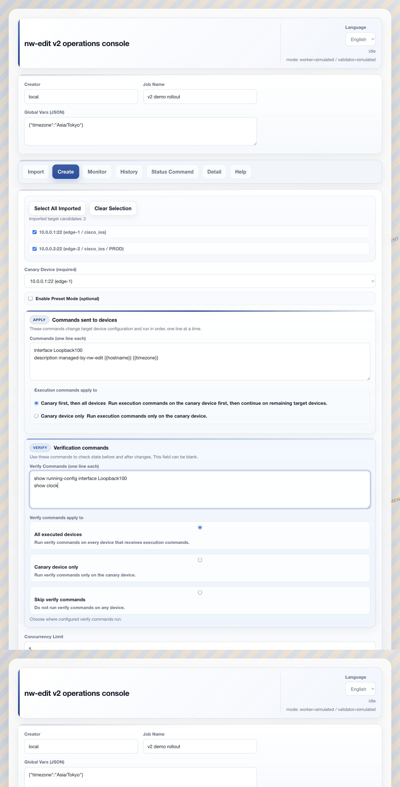
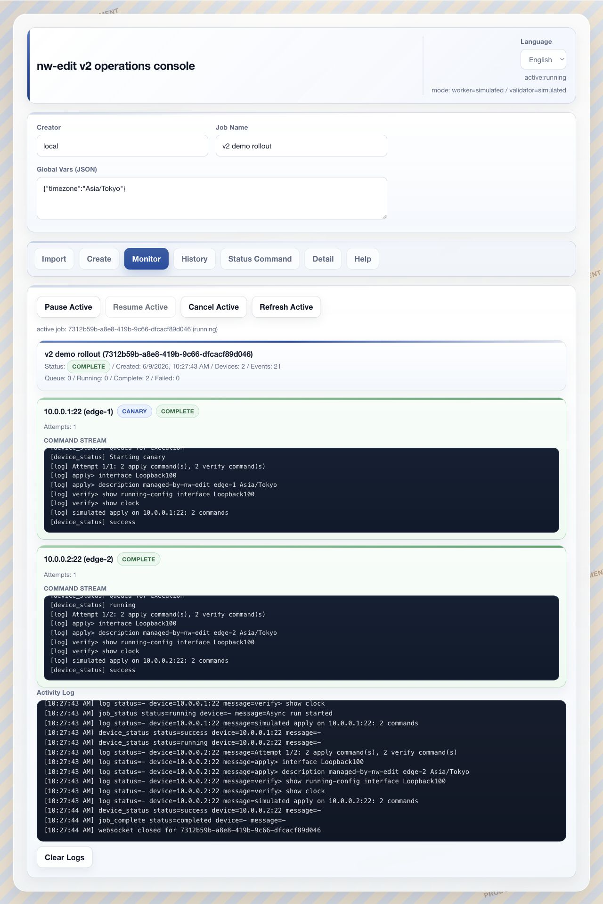
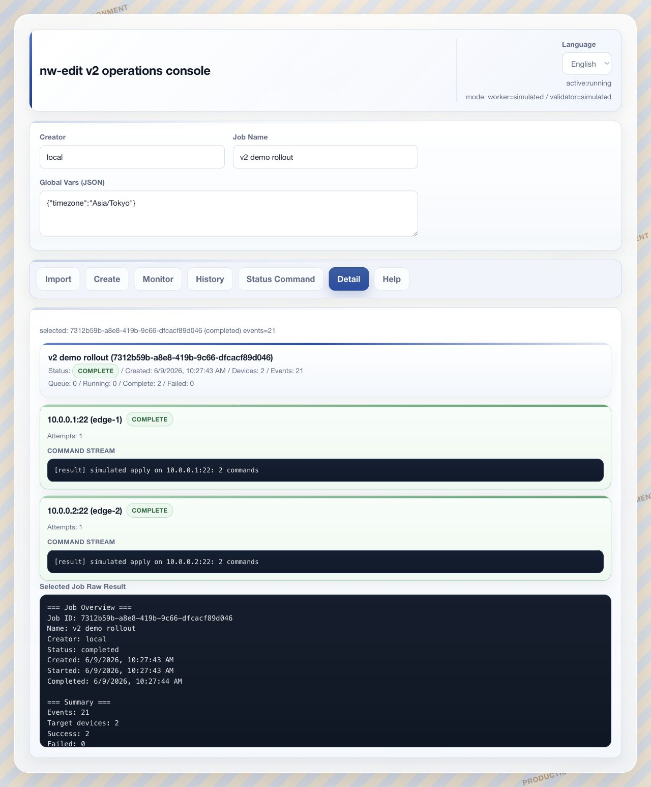

Verify commands can capture pre-change and post-change output, then present the resulting diff in the job detail view.
検証コマンドで変更前後の出力を取得し、ジョブ詳細画面で差分として確認できます。
Run the first device as a canary, then continue to the remaining devices only after the canary succeeds.
最初の1台をCanaryとして実行し、成功後に残りの機器へ展開できます。
After the canary passes, run the remaining targets in parallel with an explicit concurrency limit.
Canary成功後、明示した同時実行数で残りの対象へ並列に展開できます。
Compose reusable commands with global variables, imported CSV fields, and per-host variables such as {{hostname}}.
{{hostname}} などのホスト別変数、CSV項目、グローバル変数で再利用しやすいコマンドを作れます。
Reusable commands, device-specific output.
再利用できるコマンドを、機器ごとの値で実行。
Command templates accept placeholders from global variables and imported device data. The same command set can adapt to each host without hand-editing every line.
コマンドテンプレートはグローバル変数とインポート済み機器データのプレースホルダーを受け付けます。 同じコマンドセットを各ホスト向けに展開できます。
{{timezone}}comes from job-level global variables.{{timezone}}はジョブ単位のグローバル変数から取得されます。{{hostname}}comes from host variables or imported CSV columns.{{hostname}}はホスト変数またはCSV列から取得されます。

Create page with target selection, canary selection, execution commands, verify commands, and variable placeholders.
対象選択、Canary選択、実行コマンド、検証コマンド、変数プレースホルダーを含む作成画面。
A final checkpoint before anything runs.
実行前に最後の確認ポイント。
The pre-run review consolidates targets, execution commands, verification commands, and effective runtime settings. Operators can confirm the fanout strategy and concurrency limit before sending commands to devices.
実行前確認では、対象、実行コマンド、検証コマンド、有効な実行設定をまとめて表示します。 機器へコマンドを送る前に展開方式と同時実行数を確認できます。
- Canary device is explicit.
- Canary機器が明示されます。
- Parallel or sequential post-canary fanout is visible.
- Canary後の並列/逐次展開が見えます。
- The effective concurrency limit is shown before execution.
- 有効な同時実行数を実行前に確認できます。
Pre-run review keeps operational intent visible at the moment of execution.
実行直前に、運用意図を見える状態に保ちます。
Roll out in parallel after the first device passes.
最初の1台が成功してから並列展開。
During execution, the canary device is tagged in the monitor view. Remaining targets continue only after the canary succeeds, then fan out in parallel up to the configured concurrency limit.
実行中、Monitor画面ではCanary機器がタグ表示されます。 Canary成功後に残りの対象へ進み、設定した同時実行数を上限に並列展開します。

Monitor view shows per-device progress, command stream, variable-substituted commands, and post-canary parallel fanout.
Monitor画面では機器ごとの進捗、コマンドストリーム、変数展開後のコマンド、Canary後の並列展開を確認できます。
Compare before and after outputs.
実行前後の出力を比較。
With a Netmiko-backed run, verify commands are collected before and after the change. The detail view renders pre-output, apply output, post-output, and a unified pre/post diff.
Netmiko実行では、検証コマンドの出力を変更前後で取得します。 詳細画面には変更前出力、適用出力、変更後出力、統一形式の差分が表示されます。

-description managed-by-nw-edit edge-1 UTC +description managed-by-nw-edit edge-1 Asia/Tokyo interface Loopback100 no shutdown